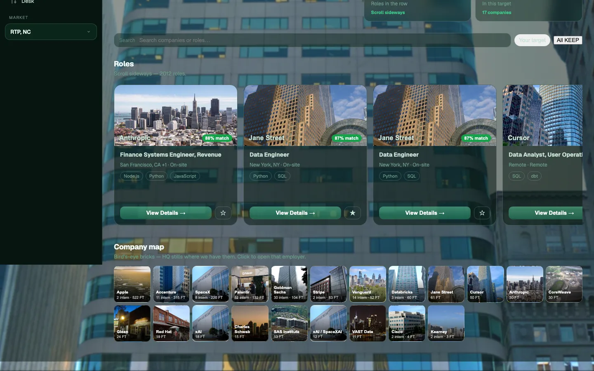
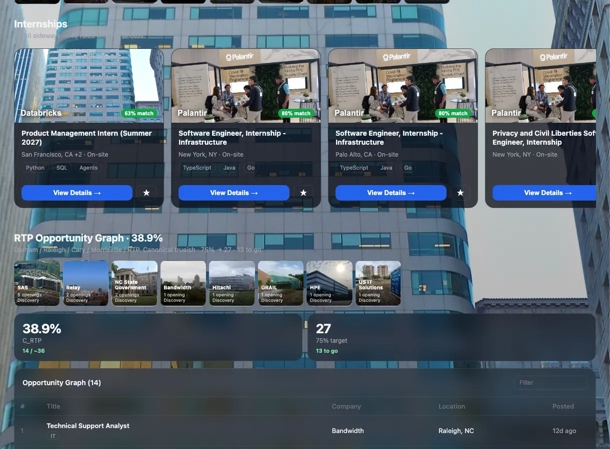
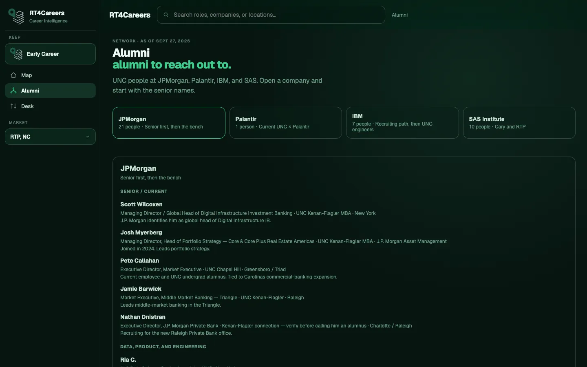
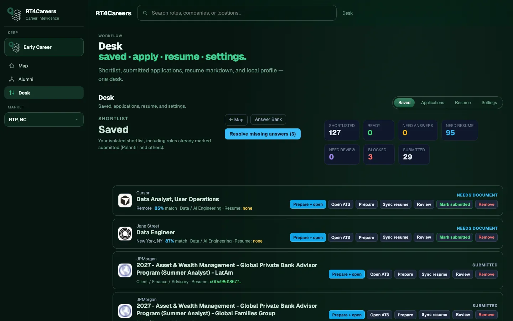

What the market actually shows
A maintained map, not a search box — and why the queue is a decision object, not a job board.
Read the noteMarket, graph, map, and desk for people who have to allocate attention — not guess which role is worth a conversation.
Views are examples of the product surfaces, not customers or endorsements.





RT4Careers reads the opportunity market the way a search actually works: which roles deserve a conversation, where coverage is thin, and what the Triangle is holding right now.
Roles stay on a maintained map. You filter what is already there. Typing is not a fresh crawl of the internet.
Constraints, timeline, and fit sit in the same frame as the opening, so a keep is a decision and not a bookmark.
Target employers and the gap to the market you meant to cover — before you assume the board is complete.
Pins, metros, and remote. Location is part of the decision, not a filter you apply after the list is already wrong.
Keep, review, and apply without leaving the map. The desk is the subset that needs a move this week.
Durham, Raleigh, Cary, Morrisville. Stock against a coverage target, and what is still missing from the Triangle.
Every search runs through the same decision system: the market, the graph, the map, and the desk.
The mapped market, already filtered to what belongs. A queue you can work — not a search results page you have to interpret.
See how much of the Research Triangle market is actually on the map, and what is still missing before you trust the list.
Keep, review, hold, apply. The desk is the short list — the part of the market that needs a decision, not the whole map.
The same surfaces open on the market you are actually working. These frames are examples, not affiliations.
Notes on coverage, fit, and what the map is actually showing across the opportunity market.
A maintained map, not a search box — and why the queue is a decision object, not a job board.
Read the noteCoverage gaps, the RTP graph, and desk examples will land here.
Browse InsightsWalkthroughs are scheduled. There is no public self-serve plan on this page.